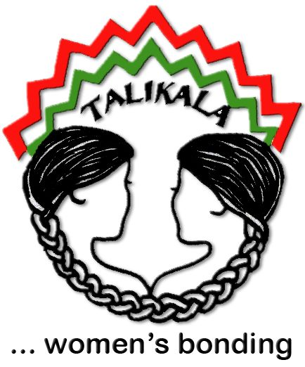
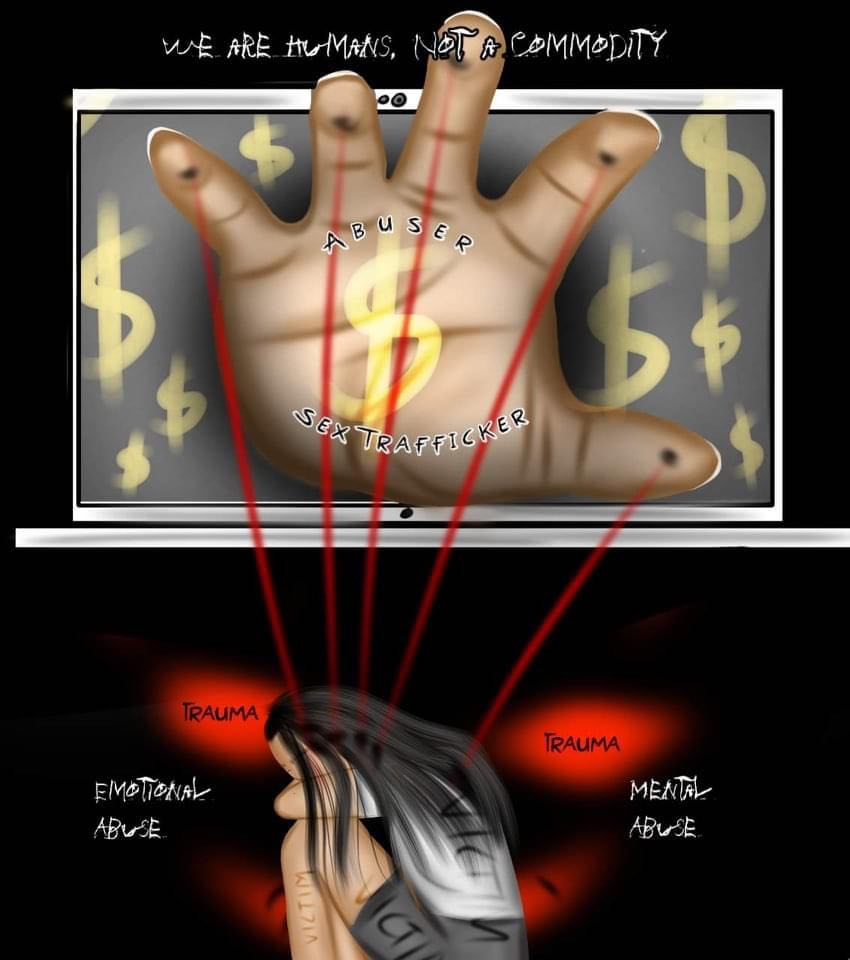
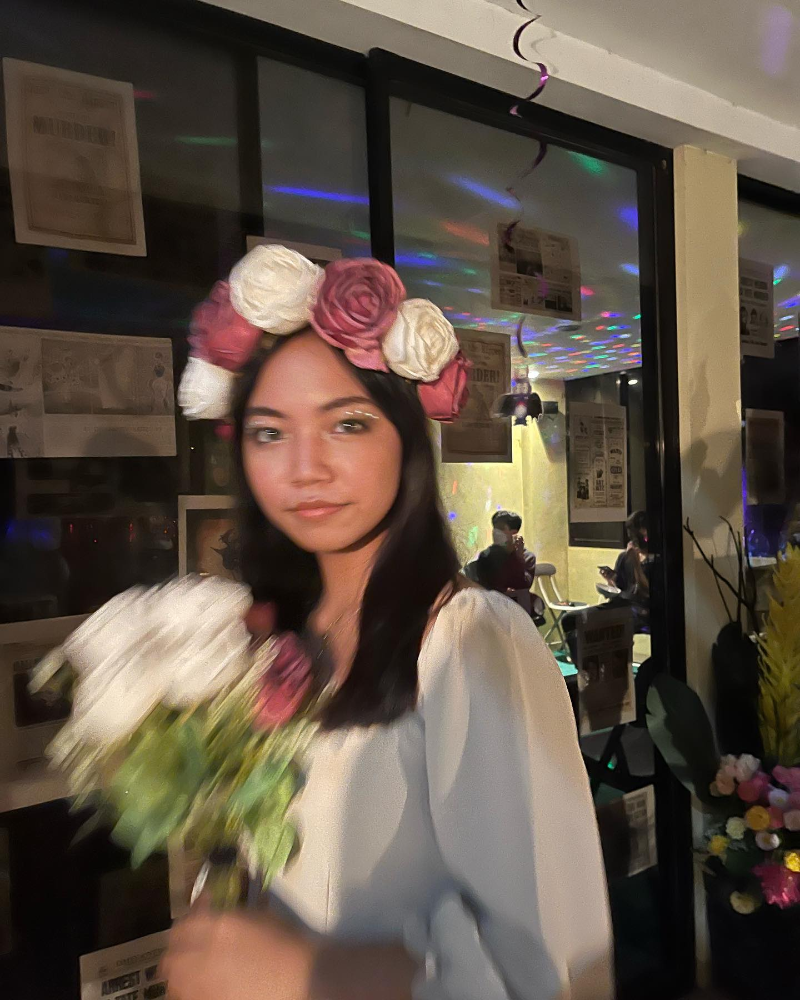

Introduction to Talikala
Talikala is a non-governmental organization (NGO) run by women for women which offers support, advice, training, and counseling to women and girls who have been forced into the sex trade in Davao City, Philippines. The organization also promotes human rights by raising awareness on the rights of women and children and on issues such as reproductive health, gender sensitivity, anti-prostitution anti-trafficking in persons, online sexual abuse and exploitation, and capacity building of leaders of community-based organizations. Founded on August 7, 1987 by three women of diverse backgrounds: American lay missionary Cindy O’Donnell, Filipina social worker Elizabeth O’Brien, and former night club dancer Felicidad Prieto, the group was formed to help protect the prostituted women and children in Davao City from the crisis wreaked by HIV/AIDS, but it has since grown able to respond to the challenge of totally emancipating these exploited women and children from the bondage of human trafficking and prostitution. Its beneficiaries are women who were victims of prostitution and sex trafficking, aged from 6-50 years old, and its benefactors are organizations that Talikala has helped by providing essential technical support until these groups themselves became independent and fully self-supporting. One of these groups is Men in Valuable Partnership with Women and Children (MVP) which started as a grassroots and community-based organization of men that provides perspectives about prostitution from its demand side.
Talikala's Actvities
Talikala hosts numerous activities to fulfill their mission of regaining the dignity of prostituted women and their image in society, improve the quality of life of women who are victims and survivors of sex trafficking and prostitution, help them break free from the chains of literal enslavement,create avenues for public education in order to change public perception towards prostituted women, and overall contribute in creating a world without prostitution where no one thinks they can buy another human being for sexual use and flattery. Some activities that they do are:

OSAEC - Tingog sa Lokal Jungle Making Contest
The Jingle Making Contest aims to raise awareness on Online Sexual Abuse and Exploitation of Children or OSAEC. The 10 entries will be a great contribution to our campaign against the proliferating OSAEC.

Courtesy Call with Mayor Pabillaran - Malaybalay City Mayor's Office
Talikala, Inc. had its Courtesy Call with the Malaybalay City Mayor's office last August 5,2022. They have presented their objectives and projects to Mayor Warren Ramos Pabillaran. Talikala received a positive response from the office and other local agencies of the City.
 GENSAN - Media Forum on Trafficking in Person (TIP) and OSAEC and Stakeholders Forum on Online Sexual Abuse and Exploitation of Children (OSAEC)
GENSAN - Media Forum on Trafficking in Person (TIP) and OSAEC and Stakeholders Forum on Online Sexual Abuse and Exploitation of Children (OSAEC)
Last July 19, 2022, Talikala, Inc. conducted two forums in General Santos City. A Media Forum on Trafficking in Person (TIP) and Online Sexual Abuse and Exploitation of Children (OSAEC) and Stakeholders Forum on Online Sexual Abuse and Exploitation of Children (OSAEC). The latter was attended by Local Government Agencies representatives.
Talikala's Challenges and Needs
Like any other organization, Talikala encounters struggles and obstacles. By going through these difficulties, we will further understand their issues.The common problems/pressing issues found in the community/institution are:
1.) Prostitution of women and girls
2.)Online Sexual Abuse and Exploitation
3.) Child Sexual Abuse
The current problems/pressing issues currently encountered by the community/institution in relation to the COVID-19 pandemic are:
1.)Community-based activities that involve a number of people cannot be implemented by Talikala
2.)Availability of food assistance for the clients is scarce and other intervention which can be extended.
3.)Visitations to their communities cannnot be done.
Based on the identified problems/issues, what are the perceived needs of the community? In addition, what are the possible interventions to these issues could the community/institution implement?
Utilization of the technology in the conduct of activities taking into consideration the particularities of the target groups.
How can the partnership (between ADDU JHS and the community) assist in the implementation of possible intervention?
It helps the organization in exploring other platforms which can be inclusive to all types of target groups- parents who are not into technology; no gadgets, no connectivity.
How can the community/institution assist the ADDU JHS students?
Talikala can arrange a virtual session/orientation with students on our issues and interaction with our target group.
What considerations should the ADDU JHS Community observe while working with the community/institution?
Confidentiality of the information shared to students by our target group. Child Protection Policy being observed by Talikala.
About the Designer
 Leila Beatriz I. Blanco is a Grade 9 student from the Ateneo de Davao University Junior High School located in McArthur Highway Matina Davao City Philippines. She is a 14 year old girl who likes to do coding. Her hobbies are playing sports, reading books, working out, and playing the piano (occasionally). Her personality type is ENTJ and her star sign is Virgo. She has recently learned how to do coding and creating her own website. Lastly, she aspires to become someone successful in the future and have a nice home, family, and friends.